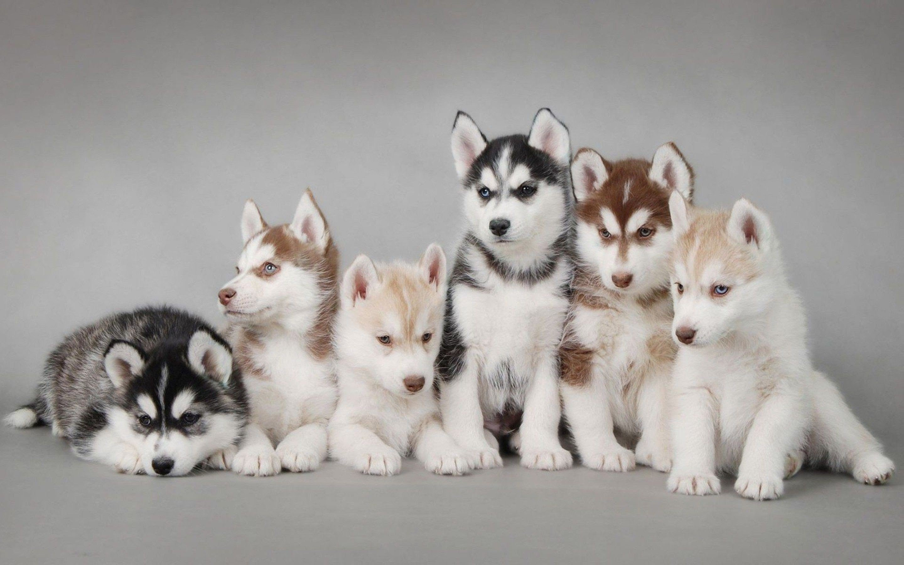

Siberian Husky - one of the oldest breeds of dogs, for many centuries faithfully serving the person.
Siberian Husky - one of the oldest breeds of dogs, for many centuries faithfully serving the person.
Friendliness, liveliness of mind and calm disposition are the main properties of the Siberian husky. But speaking of these wonderful dogs, I would not want to limit myself to such a short list.
The ancestors of modern animals, who faithfully served man for many centuries in the harsh conditions of the Far North, passed on to their descendants all the variety of distinctive traits of character and behavior that so attract today connoisseurs of this breed.
Husky, like real sled dogs, is very active and needs good constant physical activity.
Representatives of this breed are not suitable for hunting lovers, despite the presence of a rather strong instinct. For the Siberian husky, such a fishery is one of the means of food, and it will not share prey (dogs were fed only in winter, the rest of the time the team was on the pasture).
These northern dogs are pack animals, which led to an almost complete leveling of the instinct for the protection of their own territory, therefore such pets are completely unsuitable for the role of a guard. The absence of aggression towards a person, even to a stranger, also does not allow these dogs to be classified as security dogs.
Attempts to embitter the dog can only lead to persistent mental disorders of the animal. Nature endowed these amazing dogs with well-developed intelligence and the ability to make independent and often extraordinary decisions. Hence the arising difficulties in training, when, with certain commands, the husky requires a template algorithm of actions. The use of breed representatives as service animals is not practiced.
Aggression
Not aggressive (Rating 1/5)
Activity
Very high (Rating 5/5)
Training
Difficult (Rating 2/5)
Molting
Very high (Rating 5/5)
Need for care
High (Rating 4/5)
Friendliness
Friendly (Rating 4/5)